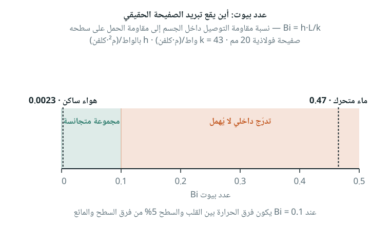

متى يجوز اعتبار الجسم الصلب كله بحرارة واحدة؟ عدد بيوت
Biot number
عدد بيوت هو نسبة مقاومة التوصيل داخل الجسم إلى مقاومة الحمل على سطحه (Bi = h·L/k)، وهو ما يحدد إن كانت درجة الحرارة داخل الجسم متجانسة. صفيحة فولاذية بسماكة 20 مم في هواء ساكن لها 0.0023 فتُعالج ككتلة واحدة، وفي ماء متحرك تصير 0.47 فيسقط هذا الافتراض.
صفيحة فولاذية كربونية بسماكة 20 مم تخرج من فرن عند 600 °م وتُترك في هواء ورشة ساكن. السؤال الهندسي المباشر: هل تبرد ككتلة واحدة درجة حرارتها متساوية، أم يبرد سطحها بينما يبقى قلبها ساخنًا؟ الجواب يعطيه عدد بيوت (Biot number): نسبة مقاومة التوصيل الحراري داخل الجسم إلى مقاومة الحمل الحراري على سطحه. الطول المميّز في هذه النسبة هو V/A؛ وللصفيحة المبرَّدة من وجهيها يساوي نصف سماكتها، أي 10 مم في هذا المثال.
المقاومة على وجه واحد لكل متر مربع هي 1/(h·A) = 0.1 K/W، ومقاومة التوصيل من المركز إلى الوجه هي L/(k·A) = 0.00023 K/W. نسبتهما 0.0023 هي عدد بيوت عند h = 10 واط/(م²·كلفن). معنى هذا الرقم أن الفرق الحراري داخل الصفيحة لا يبلغ 0.23% من الفرق بين سطحها والهواء، وأن سرعة التبريد كلها محكومة بالحمل الخارجي. ثابت الزمن τ = ρcL/h = 7,850×490×0.01/10 = 3,847 ثانية، فتبلغ الصفيحة 95% من التغيّر بعد 3τ أي 11,540 ثانية (نحو 3.2 ساعة).
وإذا غُمرت الصفيحة نفسها في ماء متحرك بمعامل حمل 2,000 واط/(م²·كلفن) صار عدد بيوت 0.47، وسقط افتراض التجانس: الحلّ الدقيق يعطي 68 ثانية لبلوغ 95%، والنموذج المجمّع يعطي 58 ثانية، أي خطأ 18% في الزمن. خصائص الفولاذ هنا منشورة عند 20 °م — 43 واط/(م·كلفن) و7,850 كغ/م³ و490 جول/(كغ·كلفن) — والأزمنة أمثلة حساب من هذه الخصائص لا قياسات مخبرية.
كيف تعمل الظاهرة؟
الحرارة تُسحب من الجسم بالحمل عبر طبقة المائع الملاصقة للسطح، ثم تعبر من السطح إلى الداخل بالتوصيل. مقاومتان على التوالي: R_c = 1/(h·A) خارجية وR_k = L/(k·A) داخلية. إذا كانت الداخلية أصغر بمراتب من الخارجية، ففرق حراري ضئيل داخل الجسم يكفي لتمرير الفيض المطلوب، فيبقى القلب والسطح على حرارة واحدة تقريبًا ويصبح الحمل هو الصمام الذي يضبط المعدل كله. العكس يقع عند موصلية منخفضة أو حمل عالٍ: السطح يقترب فورًا من حرارة المائع ويبقى القلب خلفه، فيصير التوصيل الداخلي هو الصمام. عدد بيوت هو هاتان المقاومتان مقسومتان، فقيمته الصغيرة إقرار بأن التوصيل الداخلي ليس عنق الزجاجة في المسألة.
العلاقة بالأرقام
Bi = h·L/k مع L = V/A، والحدّ العملي المتّبع Bi أصغر من 0.1. أساسه كمّي: داخل الجسم يتوزّع فرق الحرارة بنسبة Bi من فرق السطح والمائع، والصفيحة تُظهر نصفه بين المركز والوجه، أي Bi/2 = 5% عند Bi = 0.1. في المثال: 10×0.010/43 = 0.0023. والنموذج المجمّع يعطي θ = exp(−t/τ) مع τ = ρcL/h = 3,847 ثانية، فزمن 95% هو 3τ = 11,540 ثانية. عند Bi = 0.47 ينهار التقدير: حلّ السلسلة الدقيقة بجذور λ·tan λ = Bi يعطي 68 ثانية مقابل 58 ثانية، أي 18% زيادة. الخطأ ينمو مع Bi: لا يُرى تحت 0.01، ويغيّر قرار العزل والتشغيل فوق 0.3.
مفاهيم متقاربة
بيوت ليس نوسلت: الصيغة واحدة h·L/k، لكن نوسلت يستعمل موصلية المائع وطولًا هندسيًّا للمجرى ويصف الحمل على جانب المائع، أما بيوت فيستعمل موصلية الجسم الصلب وسماكته ويقيس ما يحدث داخله. وليس فورييه: فورييه Fo = αt/L² يقيس الزمن المنقضي، وبيوت يقيس توزيع المقاومة. والسؤال ليس «هل يبرد الجسم؟» بل «هل يبرد بتدرّج داخلي لا يُهمل؟»؛ فجسم معزول بسمك كبير قد يبرد ببطء وبيوته صغير، وجسم معدني في ماء مغلي قد يبرد بسرعة وبيوته كبير. كذلك تجانس درجة الحرارة لا يعني ثباتها ولا يعني بلوغ حالة استقرار.
حدود التطبيق
يفشل النموذج إذا كان h متغيّرًا بقوة مع الحرارة نفسها كما في الغليان والتكاثف والإشعاع المسيطر، أو إذا تغيّرت k مع الحرارة، أو في الأجسام المركّبة حيث لكل طبقة عدد بيوت خاص بها. وفي المدى بين 0.1 و1 لا يصلح النموذج المجمّع ولا التوصيل الصرف، فتُستعمل حلول السلسلة أو مخططات هايزلر أو محاكاة عددية. والطول المميّز يجب تعريفه صراحة: للصفيحة نصف سماكتها، وللأسطوانة نصف قطرها على اثنين، وللكرة ثلث نصف قطرها؛ وخطأ اختيار L يضاعف الرقم أو يثلّثه فينقلب الحكم. وأساس النموذج ردّ فعل فوري على خطوة في حرارة المائع، وهو ما لا يصدق في تشغيل متغيّر أو تسخين دوري.

| الكمية | القيمة | المصدر |
|---|---|---|
| الموصلية الحرارية للفولاذ الكربوني (1% كربون) عند 20 °م | 43 W/(m·K) | [1] |
| كثافة الفولاذ | 7,850 kg/m³ | [2] |
| الحرارة النوعية للفولاذ الكربوني | 490 J/(kg·K) | [3] |
| مقاومة الحمل على وجه واحد لكل متر مربع عند h = 10 | 0.1 K/W | [4] |
| مقاومة التوصيل من مركز الصفيحة إلى وجهها | 0.00023 K/W | [4] |
| عدد بيوت لصفيحة 20 مم في هواء ساكن (h = 10 واط/(م²·كلفن)) | 0.0023 بلا بُعد | [4] |
| عدد بيوت للصفيحة نفسها في ماء متحرك (h = 2,000 واط/(م²·كلفن)) | 0.47 بلا بُعد | [4] |
| ثابت الزمن لصفيحة 20 مم في هواء ساكن | 3,847 s | [4] |
| زمن بلوغ 95% من التغيّر عند Bi = 0.0023 | 11,540 s | [4] |
| زمن بلوغ 95% عند Bi = 0.47 بالحلّ الدقيق | 68 s | [4] |
| تقدير النموذج المجمّع للزمن نفسه عند Bi = 0.47 | 58 s | [4] |
| زيادة الزمن الحقيقي على تقدير النموذج المجمّع عند Bi = 0.47 | 18 % | [4] |
| فرق الحرارة بين القلب والسطح منسوبًا إلى فرق السطح والمائع عند Bi = 0.1 | 5 % | [5] |
المصادر
- 1 Engineering ToolBox — Thermal Conductivity of Metals, Metallic Elements and Alloys — The Engineering ToolBox. www.engineeringtoolbox.com/thermal-conductivity-metals-d_858.html · اطُّلع عليه 2026-11-22
- 2 Engineering ToolBox — Metals and Alloys: Densities — The Engineering ToolBox. www.engineeringtoolbox.com/metal-alloys-densities-d_50.html · اطُّلع عليه 2026-11-22
- 3 Engineering ToolBox — Specific Heat of Metals — The Engineering ToolBox. www.engineeringtoolbox.com/specific-heat-metals-d_152.html · اطُّلع عليه 2026-11-22
- 4 Engineering ToolBox — Overall Heat Transfer Coefficients, resistances in series 1/(UA) = 1/(h·A) + Σ(s/kA) — The Engineering ToolBox. www.engineeringtoolbox.com/overall-heat-transfer-coefficient-d_434.html · اطُّلع عليه 2026-11-22
- 5 OpenStax, College Physics 2e — Conduction — OpenStax. openstax.org/books/college-physics-2e/pages/14-5-conduction · اطُّلع عليه 2026-11-22
استشهد بهذا المصطلح
الصيغتان مبنيتان من بيانات الصفحة نفسها: العنوان والتاريخ ورابط النسخة المنشورة.
متى يجوز اعتبار الجسم الصلب كله بحرارة واحدة؟ عدد بيوت — Biot number. (2026). ديوان المعرفة — انفراد. https://infiradev.com/diwan/terms/biot-number.html
@misc{biot-number2026,
title = {متى يجوز اعتبار الجسم الصلب كله بحرارة واحدة؟ عدد بيوت},
titleaddon = {Biot number},
howpublished = {{ديوان المعرفة — انفراد} — مرجع علمي عربي},
year = {2026},
url = {https://infiradev.com/diwan/terms/biot-number.html},
urldate = {2026-11-22},
note = {مراجعة علمية: عبدالله الهويدي — مراجعة في تطبيق انفراد}
}
راجعه: عبدالله الهويدي — مراجعة في تطبيق انفراد · 2026-11-22 · آخر تحديث 2026-11-22